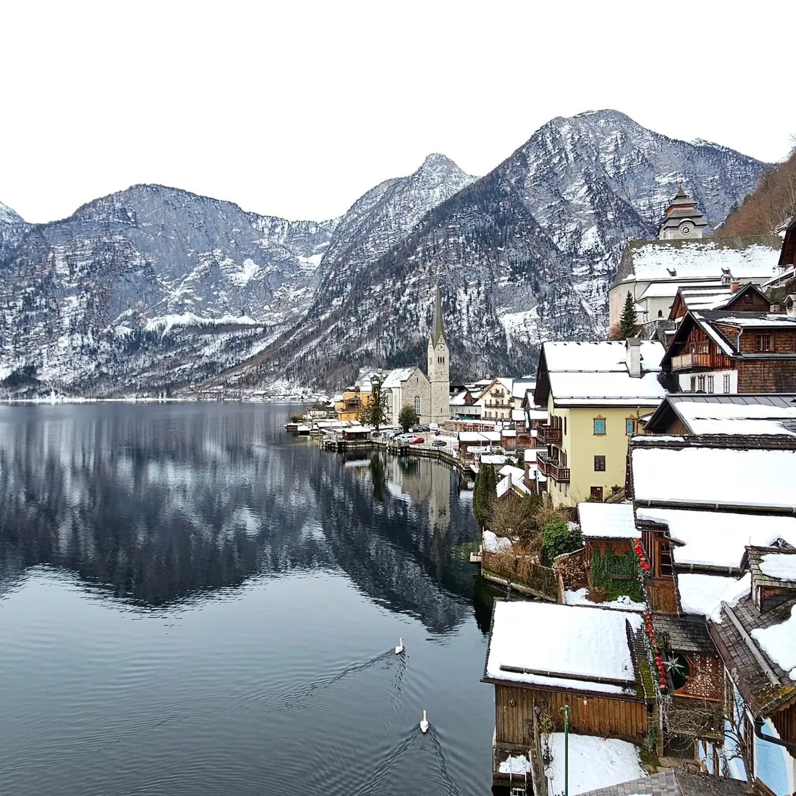

我是 CH。出國時，比起逛百貨公司或看最新的大樓，我通常更想去古城、老建築，或者往山裡走。世界文化遺產和自然遺產沒有一定要集滿多少，但只要行程排得進去，我就會想辦法繞過去看看。
大城市對我來說，常常是出發、轉車、回程或出差的中繼點。有空檔就多走一段，也許只是一個下午、一條街、幾張照片。不是每次旅行都要整理成十五天的大專刊；幾段散步、一些生活趣事，也可以是一篇記錄。
01
一趟旅行，我通常會玩不只三次
規劃行程時，先在地圖上玩一遍；真正出發，再玩一遍；回來整理照片、寫文章，又重新走過一次。
多年後再翻出舊照片，看到的東西又不一樣。原本以為是一魚三吃，現在回頭重寫，大概已經不只四吃，而且還能繼續吃下去。
這也是我一直拍照的原因。當下喜歡，就先拍下來、分享出去。當時可能只寫了幾句，過了很多年，它仍然能把我帶回那段路、那個城市，甚至想起當時為什麼按下快門。
02
從單眼相機開始的 Photo Diary
記錄方式一直在變，拍照沒有停。
2000s–2014
想用照片回憶，也用照片說故事
買了單眼相機以後，我開始寫部落格。2011 年前後，我把從 2000 年起累積的國外旅行、台灣出遊和生活記錄，陸續整理進 CH@PhotoDiary。
那幾年寫得最勤，但傳統部落格要整理大量照片、縮圖、上傳、排版，再把文字慢慢寫完，真的很花時間。後來更新逐漸變少，2015、2019 年仍有零星文章；停下來的是長篇製作，不是旅行和拍照。
2017–
文字變短了，照片繼續累積
2017 年後，我比較常用 Instagram 記錄生活。照片照樣拍，也照樣想跟大家分享，只是文字縮短成當時的幾句心得。
現在回頭看，那些短短的貼文並不是空白期。它們是我一路留下來的素材，也讓今天重新整理文章時，還找得到當時的語氣和現場。

Now
舊照片，重新開始說故事
最近有 AI 幫忙整理照片、文字和版面，我才有辦法重新撿起這件以前很喜歡、但做起來太累的事。早年的旅行先整理成 Snaplog，近年的旅程則在 CH x Travel 慢慢做成完整圖文誌。
Keep walking, keep recording.
我不一定每次都走得很遠，
但走過的路，我想慢慢整理回來。
這裡不保證每篇都是攻略，也不打算把自己寫成旅遊達人。只是把真的去過、真的拍過、隔了幾年還會想起來的東西，整理成自己也願意再翻一次的樣子。